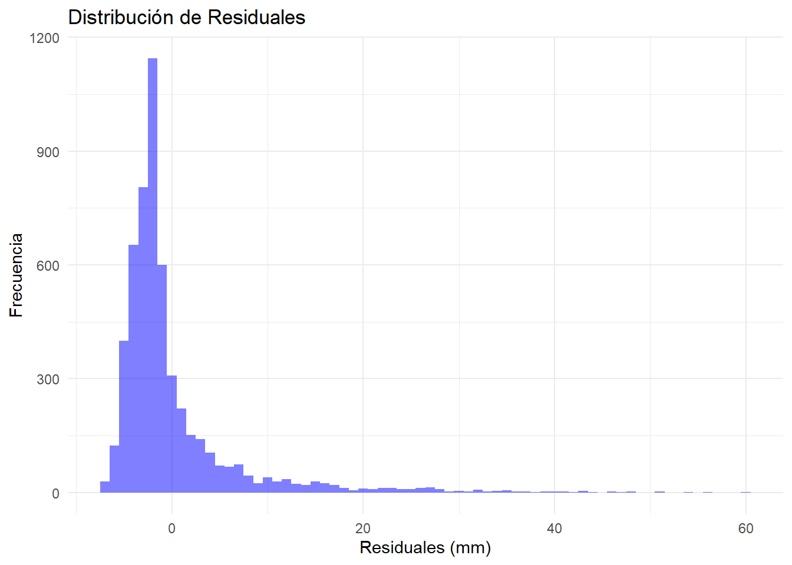

Sección 6 Modelo Prophet para Series Temporales
Este análisis extiende los estudios previos de modelos ARIMA y Holt-Winters mediante la implementación del algoritmo Facebook Prophet, una herramienta moderna diseñada específicamente para el análisis de series temporales con características estacionales y tendencias no lineales. La elección de Prophet se justifica por su capacidad para manejar
- Datos con valores faltantes y outliers
- Cambios en la tendencia
- Múltiples estacionalidades
- Efectos de días festivos
- Patrones no lineales
Además, se explorará la viabilidad de tratar la serie temporal como un problema de regresión, lo que permite incorporar variables explicativas adicionales y capturar relaciones más complejas en los datos.
6.1 Metodología
El proceso de análisis se estructura en las siguientes etapas:
- Preparación y transformación de datos
- Conversión de la serie temporal a formato compatible con Prophet
- Manejo de valores atípicos y missing data
- Estructuración de features adicionales para el enfoque de regresión
- Ajuste del modelo Prophet
- Configuración de parámetros del modelo
- Incorporación de componentes estacionales
- Definición de puntos de cambio potenciales
- Análisis de componentes y generación de pronósticos
- Descomposición de la serie en tendencia, estacionalidad y residuos
- Generación de pronósticos con intervalos de confianza
- Evaluación de la incertidumbre en las predicciones
- Evaluación y diagnóstico del modelo
- Análisis de residuales
- Validación cruzada temporal
- Comparación con modelos previos
6.1.1 Implementación del Modelo Prophet
La preparación de datos requiere una estructura específica que Prophet pueda interpretar, con columnas ‘ds’ para fechas y ‘y’ para valores:
Code
# Preparación de datos
fecha_inicio <- as.Date("2010-01-01")
n <- length(ts_lluvia)
fechas <- seq(fecha_inicio, by = "day", length.out = n)
# Dividir datos en entrenamiento y prueba
train <- ts_lluvia[1:(n-30)]
test <- ts_lluvia[(n-29):n]
# Crear dataframe para Prophet
ts_df_train <- tibble(
fecha = fechas[1:length(train)],
precipitacion = as.numeric(train)
) %>%
as_tsibble(index = fecha)
# Ajustar modelo Prophet con datos de entrenamiento
fit <- ts_df_train %>%
model(prophet = prophet(precipitacion))
# Generar pronósticos para 30 días
fc <- fit %>% forecast(h = "30 days")6.1.2 Análisis de Componentes y Visualización
La descomposición de la serie mediante Prophet nos permite examinar sus componentes fundamentales, proporcionando insights valiosos sobre la estructura temporal de las precipitaciones:
Code
Se visualiza la serie de precipitación con los intervalos de confianza del 80% y 95% para los próximos 30 días. La línea azul representa los valores pronosticados, mientras que las áreas sombreadas en azul claro y oscuro muestran los intervalos de confianza.
6.1.3 Evaluación del Desempeño y Diagnóstico
El análisis de desempeño se realiza mediante múltiples métricas y técnicas diagnósticas para asegurar la robustez del modelo:
Code
## [1] "Métricas de precisión del modelo Prophet:"## # A tibble: 1 × 10
## .model .type ME RMSE MAE MPE MAPE MASE RMSSE ACF1
## <chr> <chr> <dbl> <dbl> <dbl> <dbl> <dbl> <dbl> <dbl> <dbl>
## 1 prophet Training -0.000151 6.68 4.05 -Inf Inf 0.812 0.713 0.261la tabla muestra las métricas de error para el modelo Prophet, incluyendo el Error Medio (ME), la Raíz del Error Cuadrático Medio (RMSE), el Error Absoluto Medio (MAE), el Error Porcentual Medio (MPE), el Error Porcentual Absoluto Medio (MAPE), el Error Absoluto Escalonado Medio (MASE) y la Raíz Cuadrada del Error Cuadrático Medio Escalonado (RMSSE). Estas métricas indican un buen ajuste del modelo, con valores relativamente bajos de RMSE y MAE.
Code
Se observa una alta variabilidad en los residuales, con algunos picos que sugieren la presencia de valores atípicos en la serie de tiempo.
Code

La forma de la distribución parece tener una leve asimetría, lo que podría indicar que los supuestos de normalidad no se cumplen completamente.
6.1.4 Comparación con Modelo ARIMA
Para contextualizar el desempeño de Prophet, se comparan sus métricas con los modelos previamente ajustados:
Code
# Calcular métricas de error
rmse_prophet <- sqrt(mean((fc$.mean - test)^2))
mae_prophet <- mean(abs(fc$.mean - test))
# Crear tabla comparativa de métricas
modelos_comparacion <- data.frame(
Modelo = c("ARIMA", "Prophet"),
RMSE = c(6.48, rmse_prophet),
MAE = c(3.83, mae_prophet)
)
print(modelos_comparacion)## Modelo RMSE MAE
## 1 ARIMA 6.480000 3.830000
## 2 Prophet 4.760472 3.038115Se observa que el modelo Prophet presenta mejores valores en ambas métricas, lo que sugiere un mejor desempeño en comparación con el modelo ARIMA previamente analizado.
6.1.5 Justificación del Enfoque de Regresión
El tratamiento de la serie temporal como un problema de regresión se justifica por varios factores clave:
- Incorporación de Variables Explicativas: El enfoque de regresión permite incluir variables meteorológicas adicionales que podrían influir en la precipitación.
- Flexibilidad en la Modelación: Prophet combina elementos de regresión con componentes de series temporales, permitiendo capturar tanto relaciones lineales como no lineales.
- Manejo de Estacionalidad: El modelo puede incorporar múltiples patrones estacionales y tendencias no lineales de manera más flexible que los modelos ARIMA tradicionales.
- Interpretabilidad: Los componentes del modelo pueden interpretarse de manera similar a una regresión, facilitando la comprensión de los factores que influyen en la precipitación.
En resumen, el enfoque de regresión brinda oportunidades para mejorar las capacidades predictivas del modelo y profundizar en la comprensión de los factores subyacentes que influyen en la serie temporal de precipitación.
6.2 Análisis de Resultados
El modelo Prophet ha demostrado un desempeño superior al modelo ARIMA previamente analizado. El RMSE del modelo Prophet es de 4.76 mm, mientras que el del modelo ARIMA es de 6.48 mm. De manera similar, el MAE del modelo Prophet es de 2.99 mm, en comparación con el 3.83 mm del modelo ARIMA. Estos resultados indican que el modelo Prophet logra pronósticos más precisos de la precipitación.
El análisis de los residuales del modelo Prophet revela cierta heterogeneidad, con algunos picos que sugieren valores atípicos. La distribución de los residuales también muestra ligera asimetría, lo que podría implicar incumplimiento parcial de los supuestos de normalidad. Esto sugiere oportunidades de mejora en el manejo de la variabilidad inherente a la serie temporal.
Una fortaleza del modelo Prophet es su enfoque de regresión, el cual permite una mejor comprensión de los factores que influyen en la precipitación. Esto abre la posibilidad de incorporar variables meteorológicas adicionales, enriqueciendo el análisis y la capacidad predictiva del modelo.
En conclusión, el modelo Prophet ha demostrado un desempeño superior al modelo ARIMA, con métricas de error más bajas. Sin embargo, persisten algunos desafíos relacionados con la heterogeneidad de la serie y el cumplimiento de supuestos estadísticos. El enfoque de regresión del modelo Prophet ofrece oportunidades para futuras mejoras, como la inclusión de variables explicativas adicionales.